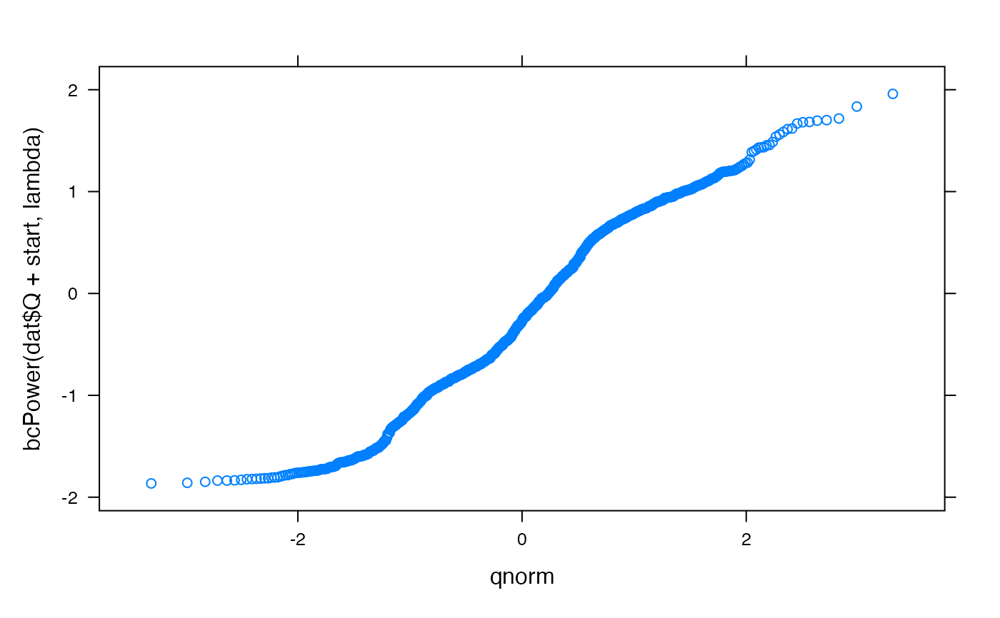

R/buildTsObjective.R
buildTsObjective.RdGenerate objective functions with temporal aggregation, data transformation and an optional reference model.
buildTsObjective(
Q,
groups = NULL,
FUN = sum,
...,
ref = NULL,
boxcox = FALSE,
start = NULL
)
buildTsLikelihood(
Q,
groups = NULL,
FUN = sum,
...,
boxcox = FALSE,
start = NULL,
distribution = dnorm,
outliers = 0
)observed data, typically a zoo object.
an optional grouping variable, of the same length as Q,
to aggregate the observed, fitted and reference time series. This can be a
factor, or a plain vector. It can also be a zoo object
with factor-type coredata, in which case it will be matched
with corresponding times in Q, etc. Typically groups would be
generated by cut.Date (for regular time periods) or
eventseq (for events). See examples.
the aggregation function (and any extra arguments) to use on
each group when groups is specified. The actual aggregation is done
by eventapply.
Placeholder
output from a reference model correponding to Q. This is
passed, after any aggregation and/or transformation, to
nseStat. If left as NULL, the mean (of
aggregated/transformed data) is used.
if boxcox = TRUE, each dataset will be
transformed with a Box-Cox transformation (see bcPower).
The power is estimated from the observed series Q (after any
aggregation) by powerTransform. Alternatively the power
can be specified as the value of the boxcox argument. Note that
boxcox = 0 is a log transform. The offset is specified as the
start argument; if NULL it defaults to the 10 percentile (i.e.
lowest decile) of the non-zero values of Q.
Placeholder
Placeholder
buildTsObjective returns a function, which can be
passed arguments Q, X, ... (the standard signature for hydromad
objective functions). The Q argument is ignored since it was already
specified directly to buildTsObjective: i.e. the returned function is
only valid on the same dataset Q with corresponding fitted values
X. Further arguments to the returned function will be passed on to
nseStat (therefore the objective function is to be maximised,
not minimised). If boxcox = TRUE was specified, the estimated
Box-Cox power can be extracted from the returned function f by
environment(f)$lambda and similarly for the offset value
start.
data(Cotter)
dat <- window(Cotter, start = "1990-01-01", end = "1993-01-01")
## use Box-Cox transform with parameters estimated from Q
objfun <- buildTsObjective(dat$Q, boxcox = TRUE)
objfun(X = dat$Q + 10)
#> [1] -6.854694
## extract the estimated Box-Cox parameters
lambda <- environment(objfun)$lambda
start <- environment(objfun)$start
require(car)
#> Loading required package: car
#> Loading required package: carData
qqmath(~ bcPower(dat$Q + start, lambda))

## in this case the result is the same as:
nseStat(
bcPower(dat$Q + start, lambda),
bcPower(dat$Q + 10 + start, lambda)
)
#> [1] -19.13578
## use monthly aggregation and log transform (Box-Cox lambda = 0)
objfun <- buildTsObjective(dat$Q,
groups = cut(time(dat), "months"),
FUN = sum, boxcox = 0
)
objfun(X = dat$Q + 10)
#> [1] -8.327432